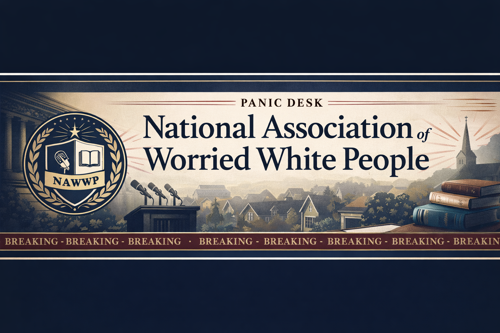

Lead story
Conservative Attacks on Diversity, Equity, and Inclusion Intensify - National Today
Conservative Attacks on Diversity, Equity, and Inclusion Intensify National Today
DEI backlash

Conservative Attacks on Diversity, Equity, and Inclusion Intensify National Today
Clear on-theme stories from this edition.
PM Starmer Faces Backlash after Calling Muslims the ‘Face of Modern Britain’ Hungarian Conservative
How SCOTUS Manipulated Its Docket to Hide an Anti-LGBTQ+ Ruling From the Spotlight Slate
Legislation to require Tennessee public schools to check student immigration status and report it to the state education department moved one significant step closer to becoming law after passage Monday in the GOP-dominated House of Representatives. The bill ( HB073/SB0836 ) by House Majority Leader William Lamberth, a Portland Republican, and Sen. Bo Watson, a Hixson Republican, drew heated pushback from Democrats on the House floor, who unsuccessfully offered a series of amendments that includ
Borderline or adjacent stories worth a second look.